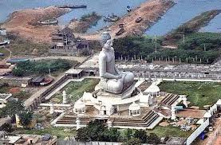

The state has three main physiographic regions: the coastal plain to the east, extending from the Bay of Bengal to the mountain ranges;
the mountain ranges themselves, the Eastern Ghats, which form the western flank of the coastal plain; and, in the southwest, the plateau to the west of the Ghats.
It has the second longest coastline in India after Gujarat, of about 974 km (605 mi). Andhra Pradesh is the first state to be formed on a linguistic basis in India on 1 October 1953.
It has a total of 13 districts, six in Coastal Andhra region, three in Uttarandhra and four in the Rayalaseema region.
These 13 districts are further divided into 50 revenue divisions. There are as many as 7 revenue divisions in East Godavari, and only 2 in Vizianagaram district.
The 50 revenue divisions are in turn divided into 671 mandals. Chittoor district has the most mandals with 66 and Vizianagaram has the least with 34.
There are a total of 31 cities which include, 16 municipal corporations and 14 municipalities. There are two cities with more than one million inhabitants, namely Visakhapatnam and Vijayawada.
1.Kodi Pulao.
2.Royyala Yeppadu.
3.Pulasa Pulusu.
4.Gutti Vankaya Kura.
5.Gongura Pachadi.
6.Gonguro Mutton.
7.Natu Kodi Pulusu.
8.Akura Pappu.
9.Punugulu.
10.Dondakaya Fry.
11.Pesarattu.